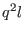
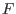
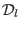

Next: The dynamic epsilon-equation (Source Up: Fortran: Module Interface turbulence: Previous: The dynamic kb-equation (Source Contents
INTERFACE:
subroutine lengthscaleeq(nlev,dt,depth,u_taus,u_taub,z0s,z0b,h,NN,SS)DESCRIPTION:
Following suggestions of Rotta (1951), Mellor and Yamada (1982) proposed an equation for the product  expressed by
The so-called wall function, , appearing in (160) is defined by
For horizontally homogeneous flows, the transport term  appearing in (160) is expressed by a simple gradient formulation,
|
At the end of this routine the length-scale can be constrained according to a suggestion of Galperin et al. (1988). This feature is optional and can be activated by setting length_lim = .true. in gotmturb.nml.
USES:
use turbulence, only: P,B
use turbulence, only: tke,tkeo,k_min,eps,eps_min,L
use turbulence, only: kappa,e1,e2,e3,b1
use turbulence, only: MY_length,cm0,cde,galp,length_lim
use turbulence, only: q2l_bc, psi_ubc, psi_lbc, ubc_type, lbc_type
use turbulence, only: sl
use util, only: Dirichlet,Neumann
IMPLICIT NONE
INPUT PARAMETERS:
number of vertical layers
integer, intent(in) :: nlev
time step (s)
REALTYPE, intent(in) :: dt
local water depth (m)
REALTYPE, intent(in) :: depth
surface and bottom
friction velocity (m/s)
REALTYPE, intent(in) :: u_taus,u_taub
surface and bottom
roughness length (m)
REALTYPE, intent(in) :: z0s,z0b
layer thickness (m)
REALTYPE, intent(in) :: h(0:nlev)
square of shear and buoyancy
frequency (1/s^2)
REALTYPE, intent(in) :: NN(0:nlev),SS(0:nlev)
REVISION HISTORY:
Original author(s): Lars Umlauf
(re-write after first version of
H. Burchard and K. Bolding
$Log: lengthscaleeq.F90,v $
Revision 1.8 2007-01-06 11:49:15 kbk
namelist file extension changed .inp --> .nml
Revision 1.7 2005/11/15 11:35:02 lars
documentation finish for print
Revision 1.6 2005/11/03 20:53:37 hb
Patankar trick reverted to older versions for
stabilising 3D computations
Revision 1.5 2005/06/27 13:44:07 kbk
modified + removed traling blanks
Revision 1.4 2003/03/28 09:20:35 kbk
added new copyright to files
Revision 1.3 2003/03/10 09:02:05 gotm
Added new Generic Turbulence Model +
improved documentation and cleaned up code
Karsten Bolding 2012-01-24